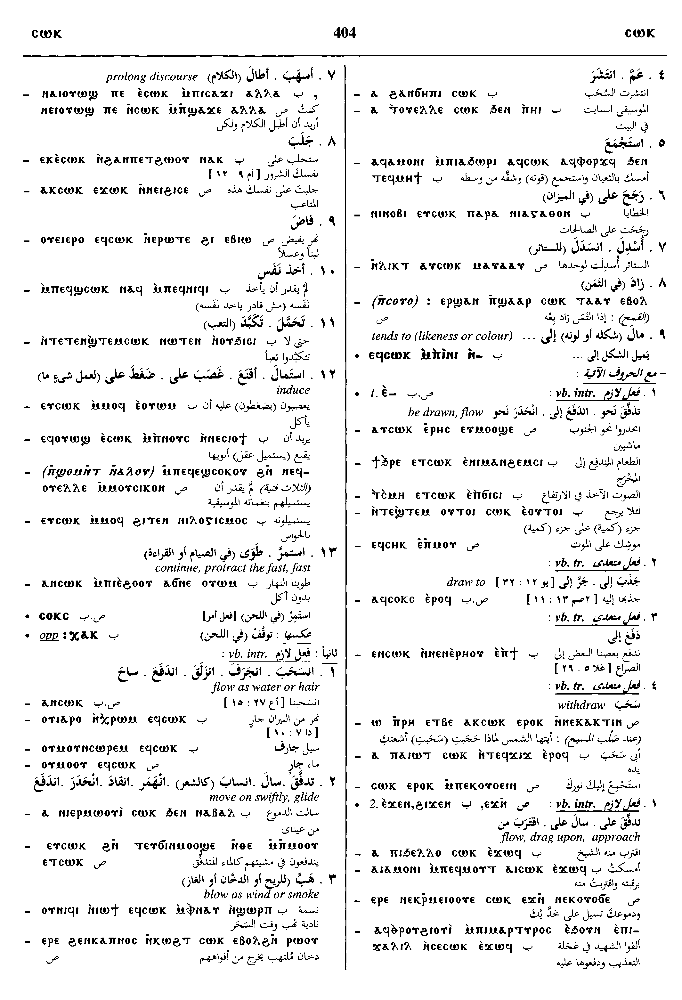
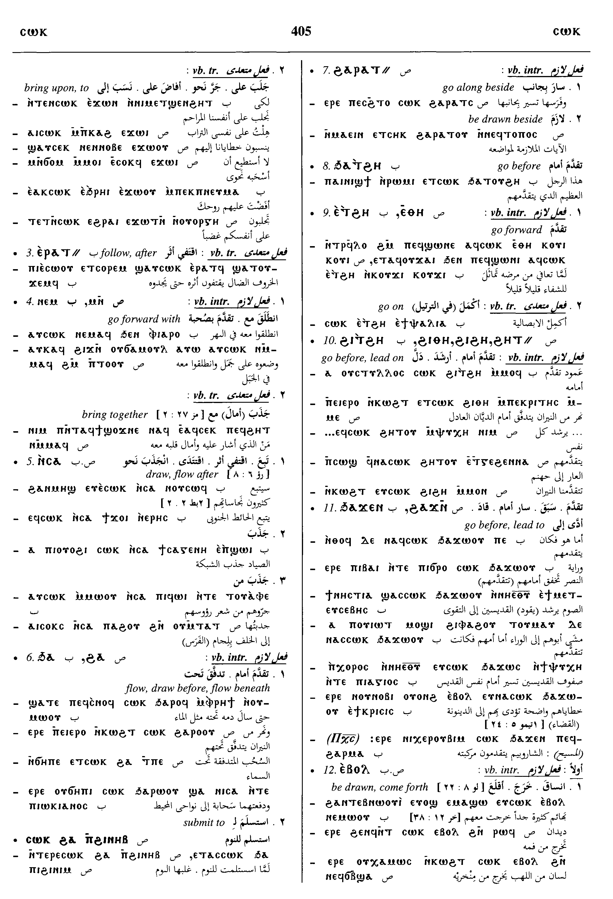
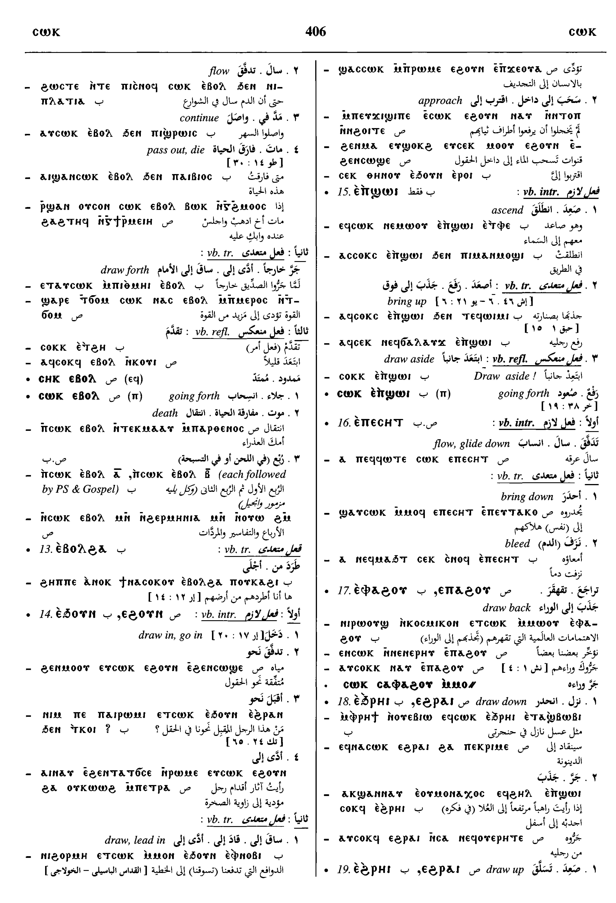
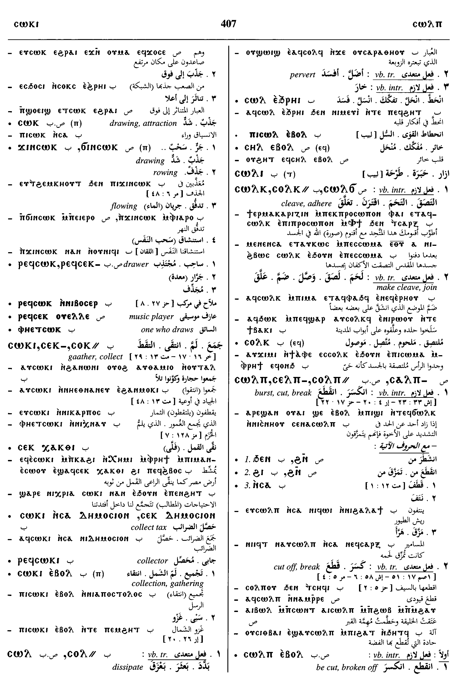
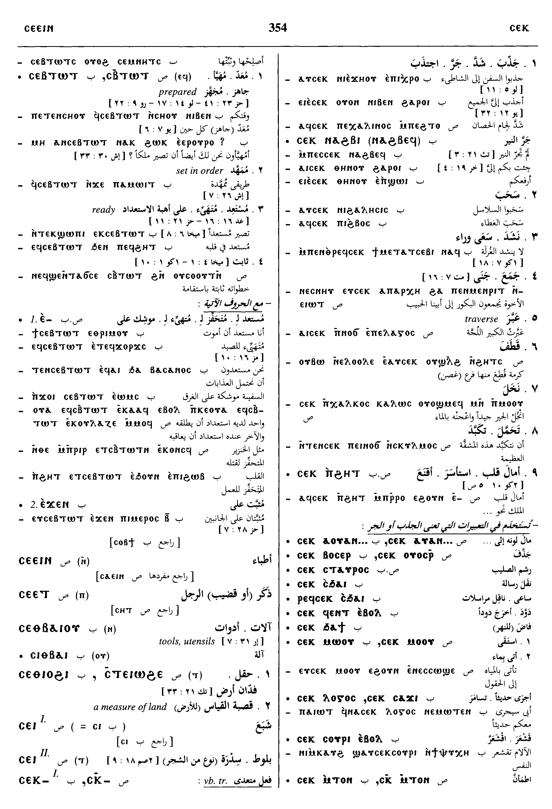

(verb)
intr: flow as water, hair, blow as wind, smoke, generally move on swiftly, glide, also draw, be drawn [ελκειν, παραρρειν, συρειν, φερεσθαι]
tr:
― draw, beguile, gather, impel [ελκειν, εφελκειν, ελαυνειν]
― protract the fast, fast S,B
refl S,L,B, draw aside, induce [εκκλινειν, φερεσθαι]
tr:
― draw, beguile, gather, impel [ελκειν, εφελκειν, ελαυνειν]
― protract the fast, fast S,B
refl S,L,B, draw aside, induce [εκκλινειν, φερεσθαι]
1: flow as water, 2: flow as hair, 3: blow as wind, smoke, 4: glide, 5: draw, 6: beguile, 7: gather, 8: impel, 9: protract the fast, 10: draw aside, 11: induce
complete+
| With following preposition:4716 | 326b | ||||||||
| ― ⲉ- SLB | (verb)intr: be drawn, flow, tend toward [περισυρειν]
tr: draw to4717 |
||||||||
| ― ⲉⲣⲁⲧ⸗ B | follow after4718 | ||||||||
| ― ⲉϫⲛ- SB | intr: flow, drag upon, approach
tr: bring upon, to4719 |
||||||||
| ― ⲙⲛ-, ― ⲛⲉⲙ- SB | intr: go forward with
tr: bring together4720 |
||||||||
| ― ⲛ- S | flow with4721 | 327a | |||||||
| ― ⲛⲥⲁ- SB | draw, follow after4722 | ||||||||
| ― ⲛⲥⲁⲡⲁϩⲟⲩ S | draw back6130 | ||||||||
| ― ϩⲁ-, ― ϧⲁ- SB | flow, draw before, beneath, submit to4723 | ||||||||
| c ϩⲁⲣⲁⲧ⸗ S | go along beside6131 | ||||||||
| ― ϩⲏⲧ⸗ SA | lead on, go before [προαγειν]4724 | ||||||||
| ― ϩⲓⲑⲏ ⲛ- SB | meaning same4725 | ||||||||
| ― ϩⲁϫⲛ-, ― ϧⲁϫⲉⲛ- SB | meaning same4726 | ||||||||
| ― ϩⲓϫⲛ- SB | draw, flow upon4727 | ||||||||
| With following adverb:4728 | 327b | ||||||||
| ― ⲉⲃⲟⲗ SB | (verb)intr:
― be drawn, come forth [αναγειν] ― pass out, die [αποτρεχειν, απολυεσθαι, μεταλλασσειν] tr: draw forth [συρειν, εξελκειν] as nn m ― in liturg rubrics S ― going forth, death S4729 |
||||||||
| ― ϩⲁⲃⲟⲗ S | (verb)tr: draw forth, along4730 | ||||||||
| ― ⲉⲡⲉⲥⲏⲧ SAB | intr: flow down
tr: bring down [κατασυρειν, καταγειν]4731 |
||||||||
| ― ⲉⲡϣⲱⲓ B | (verb)intr: bring up
tr: [ελκειν, αναλαμβανειν]4732 |
||||||||
| ― ⲉⲡⲁϩⲟⲩ, ― ⲉⲫⲁϩⲟⲩ SB | draw back4733 | ||||||||
| ― ⲉⲑⲏ S
― ⲉⲧϩⲏ B |
go forward4734 | ||||||||
| ― ⲉϩⲟⲩⲛ S
― ⲉϧⲟⲩⲛ B |
(verb)intr: draw, go in
tr: draw, lead in4735 |
328a | |||||||
| ― ⲉϩⲣⲁⲓ S
― ⲉϩⲣⲏⲓ B |
draw up4736 | ||||||||
| ― ⲉϩⲣⲁⲓ S
― ⲉϧⲣⲏⲓ B ― ⲉϩⲣⲏⲓ BF |
draw down6132 | ||||||||
| ― SB | (noun masculine)drawing, attraction1744 | ||||||||
| ⲣⲉϥⲥ. SB | drawer1745 | ||||||||
| ϭⲓⲛⲥ., ϫⲓⲛⲥ. SB | drawing, flowing [ρευμα]1746 | ||||||||
| ⲥⲁⲕⲃⲏⲧ S | 1747 | ||||||||
| ⲥⲁⲕⲥⲟⲩⲟ S | (noun)obscure1748 | ||||||||
| ⲥⲁⲕⲥⲟⲟⲩ S | epithet1749 | ||||||||
See also:
| view | ⲱϣϯ B | (verb) intr: drag, crawl, flow [συρειν]
tr: [συρειν, αποσυρειν]1833 |
| view | ⲥⲟⲕⲥⲉⲕ SB ⲥⲉⲕⲥⲉⲕ- SB ⲥⲉⲕⲥⲟⲕ⸗ S | (verb) tr: pull, gather
as noun m B, yawn stretching mouth1396 |
| view | ⲛⲟⲩϣⲡ SAB ⲛⲟⲩⲥⲑ O ⲛⲉϣⲡ- SB ⲛⲁϣⲡ- S ⲛⲟϣⲡ⸗ SB ⲛⲁϣⲡ⸗ SA ⲛⲟϣⲡ† B p c ⲛⲁϣⲡ- BF | (verb) blow of wind
― intr: [ριπιζειν] ― tr: hence agitate, frighten, overawe S,A,B,O ― tr: [κωλυειν, πτοειν, καταπλησσειν, εκφοβειν] ― intr: be frightened982 |
| view | ϩⲁⲧⲉ, ϩⲁⲁⲧⲉ S ϩⲉϯ SfLF ϩⲉⲧⲉ, ϩⲉϯⲉ L ϧⲁϯ B ϩⲁⲁⲧ⸗ S | (verb) intr: flow [ρειν]
tr: let flow, pour [ρειν]407 |
| view | ⲛⲓϥⲉ SAL ⲛⲓⲃⲉ S ⲛⲓϥⲓ BF ⲛⲓⲃⲓ F ⲛⲁϥⲧ⸗ S ⲛⲉϥⲧ⸗ SA ⲛⲓϥⲧ⸗ S | (verb) intr: blow, breathe of wind, breath [πνειν]
tr: blow315 |
| view | ⲧⲟⲟⲩⲧⲉ S ⲑⲱⲟⲩϯ B ⲧⲁⲩϯ F ⲑⲟⲩⲉⲧ- B ⲧⲟⲩⲉⲧ- F ⲧⲟⲩⲏⲧ⸗ SF ⲑⲟⲩⲱⲧ⸗ B ⲧⲟⲩⲏⲧ† S ⲑⲟⲩⲏⲧ† B | (verb) intr: be gathered, collected [συναγειν, συνεχειν]
tr: (S once), gather, collect [αγειν, συναγειν] strike wooden boards ϣⲉⲛ. to assemble congregation, knock on door: ― intr: ― tr:1671 |
| view | ⲥⲱⲟⲩϩ SALF ⲥⲱⲟⲩⲁϩ Sf ⲥⲉⲩϩ- S ⲥⲱⲟⲩϩ- A ⲥⲟⲟⲩϩ⸗ S ⲥⲁⲩϩ⸗ ALF ⲥⲱϩ⸗ A ⲥⲁⲟⲩϩ⸗ L ⲥⲟⲟⲩϩ† S ⲥⲁⲩϩ† A ⲥⲁⲟⲩϩ† L | (verb) intr: be gathered, collected [συναγειν, συνερχεσθαι, συναθροιζεσθαι]
tr: gather, collect [συναγειν, συλλεγειν]361 |
| view | ϭⲱⲗ, ϭ(ⲉ)ⲗ-, ϭⲱⲗ- S ϭⲁⲗ- F ϭⲟ(ⲟ)ⲗ⸗, ⲕⲟⲗ⸗, ⲕⲉⲗ† S p c ϭⲁⲗ- S | (verb) tr: collect, gather [συλλεγειν]2520 |
| view | ⲥⲟⲕ A | (verb) intr: be content, satisfied [ευδοκειν]1387 |


Dawoud: 403b - 407a, 407a, 354a - 355a, 355a






